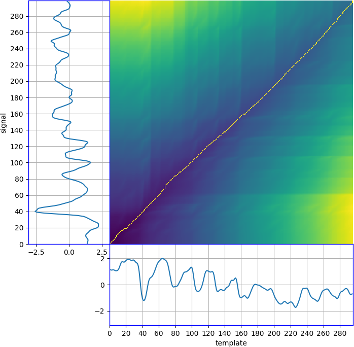

User Manual for Signal Manipulation with FMKit
This user manual demonstrates the basic usage of the FMKit code library on signal manipulation.
Requirement
The FMKit code library requires the following software packages
- Python 3 (tested with Python 3.6.9)
- NumPy (tested with NumPy 1.19.5)
- Matplotlib (tested with 3.1.2)
Installation
The code and data are released on GitHub. Please download the code and the data and unzip them to maintain the folowing folder structure.
workspace_fmkit
├── code_fmkit
│ ├── fmsignal.py
│ ├── fmsingal_vis.py
│ ├── fmsignal_demo.py
│ ├── ...(other code)...
│ ├── my_code.py
│ └── ...
└── data_demo
├── glove_pp
│ ├── alice_FMKit_0.csv
│ ├── alice_FMKit_0.npy
│ └── ...
├── glove_raw
│ ├── alice_FMKit_0.txt
│ └── ...
├── leap_pp
│ ├── alice_FMKit_0.csv
│ ├── alice_FMKit_0.npy
│ └── ...
└── leap_raw
├── alice_FMKit_0.txt
└── ...
All example signals used in this manual are in the "data_demo" folder. These files are packaged in a single zip file on the GitHub repository and they must be unzipped in this folder structure.
The following three python modules are demonstrated in this tutorial.
- fmsignal.py - signal representation, preprocessing, and manipulation.
- fmsignal_vis.py - signal visualization
- fmsignal_demo.py - demonstration for this tutorial.
To use this code library, please download the Python modules under the "code_fmkit" folder and incorporate into your project. A simple way to try the code in this manual is creating a file "my_code.py" under the folder "code_fmkit", import everything as follows, and run it.
from fmsignal import *
from fmsignal_vis import *
from fmsignal_demo import *
# Put the demo code in this manual here.
Note that the signal files for the same user writing the same content have the same file names, regardless of the data capture devices or whether they are raw signals or preprocessed signals. They are only differentiated by the folders, and hence, maintaining the correct folder structure is important for the demo.
Signal I/O
This section demonstrates preprocessed signal input/output, raw signal input/ouput, and raw signal preprocessing.
Preprocessed Signal I/O
A preprocessed signal can be constructed from a file as follows.
fn = '../date_demo/leap_pp/alice_FMKit_0'
signal = FMSignal.construct_from_file(fn, mode='csv')
A signal can also be constructed using a different file format as follows.
fn = '../date_demo/leap_pp/alice_FMKit_0'
signal = FMSignal.construct_from_file(fn, mode='npy')
These two signals are identical in memory. These files can have two different "mode", i.e., "csv" for the Comma Separated Value format, and "npy" for the NumPy binary format. The "csv" format is human readable and programming language agnostic, while the "npy" format is only designed to work with Python and NumPy. Loading the files in the "npy" format is in general faster than those in the "csv" format. Note that the file name does not need to specify the ".csv" or ".npy" extension. They are attached automatically by specify the "mode".
A signal has the three attributes "user", "cid", and "seq" to indicate the user who create this signal, the content ID, and the sequence number. They can be set when a signal is constructed from a file as follows.
fn = '../date_demo/leap_pp/alice_FMKit_0'
signal = FMSignal.construct_from_file(fn, mode='csv', user='alice', cid='FMKit', seq=0)
A signal can also be saved to a file as follows.
fn = '../date_demo/leap_pp/temp/alice_FMKit_0'
signal.save_to_file(fn, mode='csv')
A signal can also be saved using a different file format as follows.
fn = '../date_demo/leap_pp/temp/alice_FMKit_0'
signal.save_to_file(fn, mode='npy')
The signals are writtent to the folder "date_demo/leap_pp/temp" to avoid overwriting the original signal files. Note that the file name does not need to specify the ".csv" or ".npy" extension. They are attached automatically by specify the "mode".
As explained in "The FMKit Architecture" document, preprocessed signals are device agnostic and they have a unified format. Although the previous demo only shows those signals generated using the Leap Motion controller device, they can be easily modified to show those signals generated using the data glove device, as follows.
fn_load = '../date_demo/glove_pp/alice_FMKit_0'
signal = FMSignal.construct_from_file(fn_load, mode='csv')
fn_save = '../date_demo/glove_pp/temp/alice_FMKit_0'
signal.save_to_file(fn_save, mode='npy')
Raw Signal I/O
A raw signal generated using the Leap Motion controller can also be constructed in a similar way as preprocessed signals.
fn = '../date_demo/leap_raw/alice_FMKit_0'
raw_signal_leap = FMSignalLeap.construct_from_file(fn, mode='raw_csv')
Similarly, a raw signal generated using the Leap Motion controller can also be constructed using a different file format as follows.
fn = '../date_demo/leap_raw/alice_FMKit_0'
raw_signal_leap = FMSignalLeap.construct_from_file(fn, mode='raw_npy')
Note that the two file "modes" are "raw_csv" and "raw_npy" but the actual file extensions are just ".csv" and ".npy". This is intentional to avoid mistakes of using raw signals as preprocessed signals. The file extensions are attached automatically, similar to the preprocessed signals.
Besides these two formats, there is another "mode" named "raw_internal", which has the file extension ".txt". Files in this format are generated directly by our client software. There are several versions of the format with small variations, which complicates the code. Hence, they are generally only for internal usage. All released datasets only contains ".csv" or ".npy" files. Still, a raw signal generated using the Leap Motion controller can be constructed using the "raw_internal" mode as follows.
fn = '../date_demo/leap_raw/alice_FMKit_0'
raw_signal_leap = FMSignalLeap.construct_from_file(fn, mode='raw_interal')
These signals are identical in memory. They are only different in the formats when saved in files.
A raw signal generated using the Leap Motion controller can be saved to a file as follows.
fn = '../date_demo/leap_raw/temp/alice_FMKit_0'
raw_signal_leap.save_to_file(fn, mode='raw_csv')
A raw signal generated using the Leap Motion controller can also be saved using a different file format as follows.
fn = '../date_demo/leap_raw/temp/alice_FMKit_0'
raw_signal_leap.save_to_file(fn, mode='raw_npy')
Note that a raw signal cannot be saved in the "raw_internal" format.
Besides the Leap Motion controller, raw signals can also generated using our data glove device. This kind of signals can be load in a similar way as follows
fn = '../date_demo/glove_raw/alice_FMKit_0'
raw_signal_glove = FMSignalGlove.construct_from_file(fn, mode='raw_interal')
Similarly, they can be saved to files as follows.
fn = '../date_demo/glove_raw/temp/alice_FMKit_0'
raw_signal_glove.save_to_file(fn, mode='raw_csv')
Raw Signal Preprocessing
Although the raw signals from two different devices are fundamentally different, both types of signals can be preprocessed to generate the signals in the same format, as explained in "The FMKit Architecture" document.
A raw signal obtained using the Leap Motion controller device can be preprocessed as follows.
signal_leap_pp = raw_signal_leap.preprocess(point='tip')
For a raw signal obtained using the data glove, the preprocessing is similar as follows. A raw signal obtained using the Leap Motion controller device can be preprocessed as follows.
signal_glove_pp = raw_signal_glove.preprocess(point='tip')
Currently, the only usage of a raw signal (i.e., an instance of FMSignalLeap or FMSignalGlove) is to run the preprocessing procedure to obtain a preprocessed signal (i.e, an instance of FMSignal). There are other parameters can be set to control the behavior of the preprocessing procedure. See the code reference (FMSignalLeap.preprocess() or FMSignalGlove.preprocess()) for further details.
Helper Functions For Demo
Since signal I/O is frequently used in the demo, a few helper functions are provided to make the demo code short and succinct. These helper functions are defined in the "fmsignal_demo.py". They also assume the file name has the format of "user_cid_seq.csv" or "user_cid_seq.npy", and the folder structures has the format specified at the beginning of this tutorial.
The following global variables are defined for convenience, and they are used to specify the default values for the parameters of these helper functions.
FOLDER = '../data_demo'
USER = "alice"
#USER = "bob"
CID = 'FMKit'
#CID = '123456'
PP_MODE_LOAD = 'npy'
PP_MODE_SAVE = 'npy'
RAW_MODE_LOAD = 'raw_internal'
RAW_MODE_SAVE = 'raw_npy'
LEAP_PP_SUBFOLDER = 'leap_pp'
GLOVE_PP_SUBFOLDER = 'glove_pp'
LEAP_TEMPLATE_SUBFOLDER = 'leap_template'
GLOVE_TEMPLATE_SUBFOLDER = 'glove_template'
LEAP_RAW_SUBFOLDER = 'leap_raw'
GLOVE_RAW_SUBFOLDER = 'glove_raw'
DEVICE = 'leap'
#DEVICE = 'glove'
A single preprocessed signal for demo can be loaded as follows.
signal = load_one_demo_signal_pp()
A specific signal can be loaded by setting the parameter to something different from the default values as follows.
signal = load_one_demo_signal_pp(device='glove', user='bob', cid='123456', seq=5, mode='csv')
A collection of signals for demo can be loaded as follows.
signals = load_demo_signals_pp()
A specific collection of signals can be loaded by setting the parameters to something different from the default values as follows.
signals = load_demo_signals_pp(device='glove', user='bob', cid='123456', sequences=[5, 6], mode='csv')
A signal can be saved at a certain place as follows.
save_one_demo_signal_pp(signal)
save_one_demo_signal_pp(signal, device='glove') instead.
A collection of signals can be saved at a certain place as follows.
save_demo_signals_pp(signals)
For raw signal I/O, there are similar helper functions as follows.
signal_raw = load_one_demo_signal_raw()
signals_raw = load_demo_signals_raw()
save_one_demo_signal_raw(signal)
A collection of signals can be saved at a certain place as follows.
save_demo_signals_raw(signals)
Note that different signals from different devices are only distinguished by the corresponding folders. Similarly, preprocessed signals and raw signals are only distinguished by the corresponding folders. Users need to pay attention to specify the correct folder when loading and saving signals.
Signal Visualization
This section demonstrates visualization of preprocessed signals. All functions related to visualization are provided in the "fmsignal_vis.py" module. Note that only preprocessed signals can be visualized using these methods (raw signals do not follow the format of 18 sensor axes, and hence, they cannot be visualized in this way). Also, preprocessed signals are sensor agnostic, i.e., the visualization functions does care whether they are obtained from raw signals obtain by the Leap Motion controller device or the data glove device.
Visualization of One Signal
A signal can be visualized as follows.
signal = load_one_demo_signal_pp(device)
signal_vis(signal)
The edges of each plot are colored to indicate the sensor axes groups as follows.
- black - position
- red - velocity
- green - linear acceleration
- blue - orientation
- cyan - angular speed
- magenta - angular acceleration
Within each color group, the three axes are in the order x-y-z.
If there is no need to plot all sensor axes, a subset can be visualized as follows.
signal = load_one_demo_signal_pp(device='leap')
signal_vis(signal, start_col=9, nr_cols=3)
The "start_col" means the starting index of the sensor axis (i.e., columns). Note that both "start_col" and "nr_cols" must be multiples of three, i.e., the plot always bundles three axes of one specific type of physical states in the x-y-z directions together. The plot is also colored accordingly.
The signal data for all sensor axes can also be visualized in a compact way as follows.
signal = load_one_demo_signal_pp(device='leap')
signal_vis_compact(signal)
The edges of each plot are colored accordingly. Within a plot, the RGB colors of the lines map to the sensor axes x-y-z.
Signal Comparison
Two signals can be visualized in the same plot for comparison as follows.
signal_0 = load_one_demo_signal_pp(device='leap', seq=0)
signal_1 = load_one_demo_signal_pp(device='leap', seq=1)
signal_vis_comparison([signal_0, signal_1], start_col=9, nr_cols=3)

Here, the blue lines are the "signal_0" and the orange lines are the "signal_1". Since they are generated by the same person (i.e., "alice") writing the same content (i.e., "FMKit"), the two signals are similar in the visualized sensor axes. The plot is also colored according to the sensor axes groups.
Similarly, multiple signals can be compared together as follows.
signals = load_demo_signals_pp(device='leap')
signal_vis_comparison(signals, start_col=9, nr_cols=3)
Here, each signal has its own color. They are also generated by the same person (i.e., "alice") writing the same content (i.e., "FMKit"). This plot shows the inherent "fuzziness" in the in-air-handwriting, i.e., even if the same person write the same content multiple times, there are variations in the writing speed and intensity of each stroke. Hence, alignment is needed (see the section "Signal Alignment and Template")
Trajectory Visualization
This section demonstrates visualization of trajectories for preprocessed signals. This function works for both devices. It also works for both raw signals and preprocessed signals. However, the trajectory of a signal obtained by the data glove device is generally illegible.
Visualization of One Trajectory
The trajectory of one signal can be visualized as follows.
signal = load_one_demo_signal_pp(device='leap')
trajectory_vis(signal)
The view angles are kept moving intentionally to show the 3D structure in this figure. This signal is obtained by the user "alice" writing the string "FMKit" using the Leap Motion controller device. Note that this user intentionally wrote it in a legible way to facilitate this visualization. Also, the Leap Motion controller device directly records the 3D position of the joints on the hand with an infrared stereo camera.
The orientation of the finger can also be shown together with the trajectory as follows.
signal = load_one_demo_signal_pp(device='leap')
trajectory_vis(signal, show_local_axes=True, interval=10)

The line segments indicates the axes of the local finger orientation where the RGB colors correspond to x-y-z. The "interval=10" parameter means for every 10 samples of the time series, the local axes are plot once.
Trajectory Comparison
Two trajectories from two signals can be visualized together for comparison as follows.
signal_0 = load_one_demo_signal_pp(device='leap', seq=0)
signal_1 = load_one_demo_signal_pp(device='leap', seq=1)
trajectorie_vis_comparison([signal_0, signal_1])
Since these two signals are generated by the same person (i.e., "alice") writing the same content (i.e., "FMKit"), the trajectories are close to each other.
Similarly, more trajectories can be visualized together as follows.
signals = load_demo_signals_pp(device='leap')
trajectorie_vis_comparison(signals)

Each trajectory has its own color. Since they are all generated by the same person (i.e., "alice") writing the same content (i.e., "FMKit"), the trajectories are all similar in shape. Note that the preprocessing procedure normalize the pose of the in-air-handwriting, and hence, the relative pose between the in-air-handwriting and the sensor does not matter.
Trajectory Animation
As the in-air-handwriting signal is a time series of physical states of the hand, the process of generating the trajectory can be reproduced using the signal data as follows.
signal = load_one_demo_signal_pp(device='leap')
trajectory_animation(signal, seg_length=30)
Essentially, this function plot the trajectory of a signal segment in a sliding-forward window. The parameter "seg_length" controls the length of the signal segment. If it is less or equal to zero, the whole signal is plotted (by default it is zero). This is designed to facilitate the visual confirmation of the signal content for those users who write all letters in the same place.
Trajectory and Hand Geometry Animation
If a signal is obtained using the Leap Motion controller device, the raw signal contains the position of each joint on the hand, and the hand geometry can be animated together with the trajectory as follows.
raw_signal = load_one_demo_signal_raw(device='leap')
raw_signal.preprocess(point='tip')
trajectory_animation(raw_signal, seg_length=30)
This plots the position of the joints for each data sample at a time and make an animation.
Orientation Animation
Since the data glove device can only obtain angular speed and linear acceleration directly, the trajectory of a signal obtained by the data glove device is derived indirectly (usually with some regularization to prevent the unbounded accumulation of errors in the dead reckoning procedure). This trajectory does not represent the actual trajectory of the hand, and this usually means that the visualization of such a "trajectory" is usually not legible.
To check the signals from the data glove in a human understandable way, the orientation can be animated as follows.
raw_signal = load_one_demo_signal_raw(device='glove', cid='123456')
raw_signal.preprocess(point='tip')
orientation_animation(raw_signal, seg_length=20)
This plots the x-y-z axes of each sample in an animation to show the orientation of the point on the hand. The animation also plots the trajectory of the end point of the x-axis. The signal is obtained by the user "alice" writing the string "123456". Clearly a person can visually confirm the writing content is "123456" with this animation. However, not every user write strings in this way. Some user will maintain the pointing direction of the finger while moving the arm as a whole in the air to write like on an invisible wall.
Although it is designed mainly for signals obtained from the data glove device, this function works for both devices. It also works for both raw signals and preprocessed signals.
Signal Alignment and Template
This section demostrates signal alignment with the Dynamic Time Warp (DTW) algorithm.
Signal Alignment Visualization
A preprocessed signal can be aligned to another preprocessed signal using DTW as follow.
signal_0 = load_one_demo_signal_pp(device='leap', seq=0)
signal_1 = load_one_demo_signal_pp(device='leap', seq=1)
signal_0.amplitude_normalize()
signal_1.amplitude_normalize()
signal_1_aligned = signal_1.align_to(signal_0)
aligned = [signal_0, signal_1_aligned]
unaligned = [signal_0, signal_1]
signal_vis_comparison_side_by_side(aligned, unaligned, start_col=0, nr_cols=9)
These two signals are generated by the same user (i.e., "alice") writing the same content (i.e., "FMKit"). As mentioned previously in the "Signal Comparison" subsection, even for signals generated by the same user writing the same content, there are differences, mainly in the writing speed and the intensity of strokes. As the figure shows, these differences can be reduced by aligning one signal to the other signal along the time using DTW.
The function "signal_vis_comparison_side_by_side()" is designed to plot two sets of signals side by side on two columns for comparison.
Warping Path Visualization
The detailed warping path of the alignment of on signal to another signal (or a template) can be visualized as follows.
signal_0 = load_one_demo_signal_pp(device='leap', seq=0)
signal_1 = load_one_demo_signal_pp(device='leap', seq=1)
signal_0.amplitude_normalize()
signal_1.amplitude_normalize()
signal_1_aligned = signal_1.align_to(signal_0, keep_dist_matrix=True)
alignment_vis(signal_1, signal_0, signal_1_aligned, col=9)

The subplot named "template" means the template signal (i.e., "signal_0" in this demo), and the subplot named "signal" is the signal that is aligned to the template signal (i.e., "signal_1" in this demo). This figure essentially shows the DTW distance matrix (i.e., the "dist_matrix" attribute of the "signal_1_aligned") together with the two signals. The specific sensor axis representing the signal and the template can be selected by setting the "col" parameter to the sensor axis index.
The warping path can also be visualized in 3D as follows.
signal_0 = load_one_demo_signal_pp(device='leap', seq=0)
signal_1 = load_one_demo_signal_pp(device='leap', seq=1)
signal_0.amplitude_normalize()
signal_1.amplitude_normalize()
signal_1_aligned = signal_1.align_to(signal_0, keep_dist_matrix=True)
alignment_vis(signal_1, signal_0, signal_1_aligned, plot_3d=True)
This 3D visualization plot the DTW distance matrix in 3D.
These two signals are generated by the same user (i.e., "alice") writing the same content (i.e., "FMKit"), and this user can maintain the same writing behavior very well across multiple repetitions. Hence, these two signals can be alsigned very well and the warping path is close to the diagonal line. In fact, any signal can be aligned to another signal using DTW regardless whether they are generated by the same user or writing the same content. The warping path can vary significantly based on the shapes of the two signals.
Template Visualization
For multiple repetitions of the in-air-handwriting of the same content by the same user, they can be all aligned to one signal and to construct a template by taking the average of them as follows.
signals = load_demo_signals_pp(device=device, user=user, cid=cid)
template = FMSignalTemplate.construct_from_signals(signals, template_index=0)
signals_alinged = template.signals_aligned
signal_vis_comparison_side_by_side(signals_alinged, signals, start_col=0, nr_cols=9)
signal_vis_comparison_side_by_side(signals_alinged, [template], start_col=0, nr_cols=9)
After closing the first plot, the aligned signals and the template are shown in the following figure.
The function "FMSignalTemplate.construct_from_signals()" does alignment and template construction. The "template_index" parameter indicate which signal in the set is used as the "base signal" so that other signals are aligned to it. A template, i.e., an instance of the "FMSignalTemplate", is essentially the same as a preprocessed signal, only with an additional attribute to keep the variations of the original signals.
A template can be saved to a file as follows, which is the same as saving a signal. The mode can be either "csv" or "npy".
fn = '../date_demo/leap_template/alice_FMKit_0'
template(fn, mode='csv')
A template can also be loaded from a file as follows, which is also the same as loading a signal.
fn = '../date_demo/leap_template/alice_FMKit_0'
template = FMSignalTemplate.construct_from_file(fn, mode='csv')
A template also has the "user" attribute, the "cid" attribute, and the "seq" attribute. If a template is constructed from a set of signals, its "user" and "cid" attributes are copied from the "base signal" indicated by the "template_index" parameter in "FMSignalTemplate.construct_from_signals()". The "seq" attribute is always set to 0.
The demo also provide two helper functions as follows, one for loading, and the other for saving.
template = load_one_demo_template()
save_one_demo_template(template)
Improving DTW Efficiency
The default DTW implementation is in Python, which is relatively inefficient because it will iterate through the two signal data and the n-by-m DTW distance matrix (which are all NumPy ndarrays). To improve the efficiency, a version implemented in C is provided under the "code_utilities" folder. It can be installed as follows.
# cd code_utilities
# python3 ./setup.py build
# sudo python3 setup.py install --record ./files.txt
If the build step cannot find numpy header files, run the following first.
# export CFLAGS="-I $HOME/.local/lib/python3.6/site-packages/numpy/core/include $CFLAGS"
This will install a package named "fmkit_utilities" which introduces a function "fmkit_utilities.dtw_c()". It will be shown as a "built-in" function because it is implemented in C code. The "fmsignal.py" module has a Python wrapper function "dtw_c()" that calls the C implementation. This wrapper function takes the exact same format of parameters as the default Python implementation.
The "fmsignal.py" module will use the C implementation automatically if the "fmkit_utilities" package is installed. This is made using the following code at the beginning of the module.
try:
import fmkit_utilities
DTW_METHOD = "c"
except ImportError:
DTW_METHOD = "python"
The only method that invokes "dtw()" or "dtw_c()" is "FMSignal.align_to()", i.e., aligning on signal to another signal or template. It takes a parameter named "method", which is set to "DTW_METHOD" by default. Users can choose which implementations to use as follows.
signal_aligned = signal.align_to(template, method="python") # This uses the Python implementation.
signal_aligned = signal.align_to(template, method="c") # This uses the C implementation.
Note that the C implementation is kind of "fragile", and hence, it is recommended to always use the wrapper "FMSignal.dtw_c()" instead of directly using the "fmkit_utilities.dtw_c()".